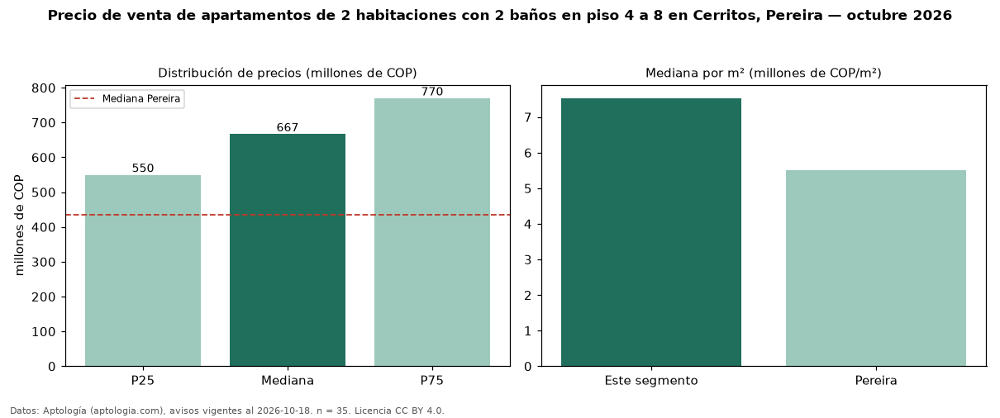

Precio de venta de apartamentos de 2 habitaciones con 2 baños en piso 4 a 8 en Cerritos, Pereira — octubre 2026
COP 667 millones es el precio mediano de apartamentos de 2 habitaciones con 2 baños en piso 4 a 8 en venta en Cerritos, Pereira (n = 35 avisos). Frente a la mediana de los apartamentos de 2 habitaciones con 2 baños en venta de Cerritos (COP 598 millones, n = 113), queda 12 % por encima; este segmento reúne el 31 % de esos avisos. Por metro cuadrado, la mediana es COP 7,53 millones/m² (n = 35), 0 % por encima de los apartamentos de 2 habitaciones con 2 baños en venta de Cerritos (COP 7,50 millones/m²). El área mediana anunciada es 89 m². La administración mediana declarada es COP 430.000 al mes (n = 16). El estrato más frecuente es 6 (83 % de los avisos con estrato). La mediana de todos los apartamentos en venta de Pereira es COP 435 millones (+53 % de diferencia). La mitad central de los avisos va de COP 550 millones a COP 770 millones (razón 1,4), una dispersión moderada. Datos: Aptología (aptologia.com), CC BY 4.0 — https://www.aptologia.com/venta/pereira/cerritos. Archivos: PDF, CSV con las cifras y gráfica PNG.

| Avisos únicos | 35 |
|---|---|
| Percentil 25 | COP 550.000.000 |
| Mediana | COP 667.000.000 |
| Percentil 75 | COP 770.000.000 |
| Mediana por m² | COP 7.532.467 |
Fuente: avisos vigentes de portales inmobiliarios recopilados por Aptología, deduplicados (mínimo 30 avisos únicos por celda). Precios pedidos, no cerrados. Fecha: 2026-10-18.